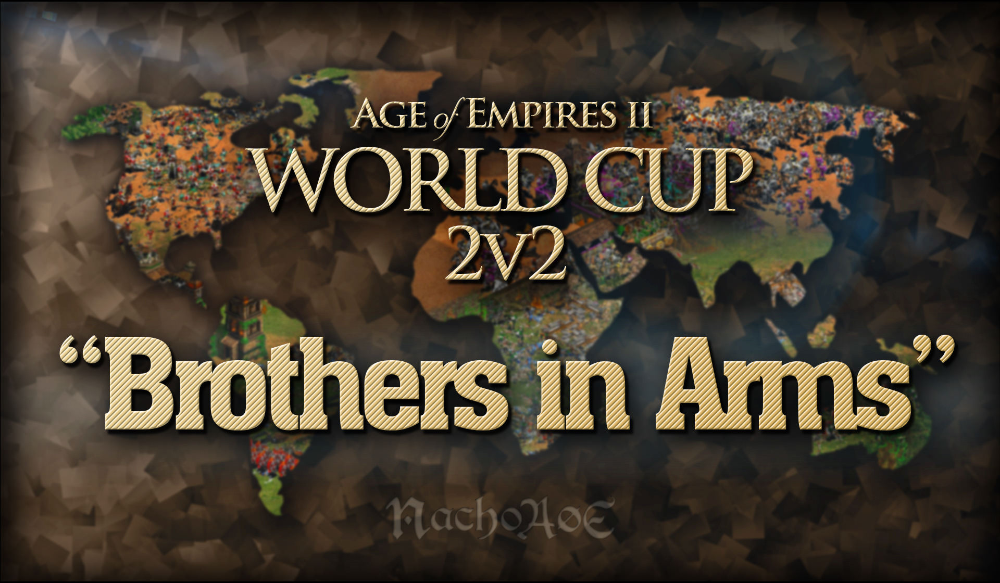
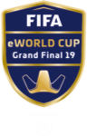
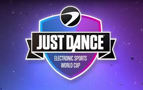
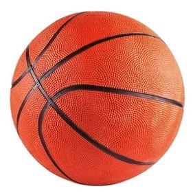
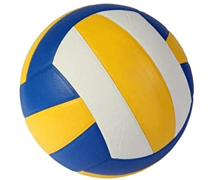
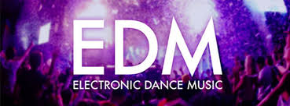

Pasatiempos
Videojuegos
Deportes
Los videojuegos en los ultimos años no solo para mi, se ha convertido en algo muy util cuando se desea pasar el tiempo de manera rapida y divertida,en mi caso particular, estos han llegado a consumir quiza un 70% del tiempo libre que tengo entre el estudio y el trabajo.
Yo he participado en diversas eliminatorias de juegos tales como Fifa,Just Dance y actualmente me encuentro en un torneo de un juego denominado Age of Empires 2, estos torneos y eliminatorias en ocasiones llegan a ser tan importantes que uno puede hasta conseguir dinero solo por participar en ellos.
  En la actualidad mis deportes favoritos son tanto el basketball como el volleyball,en el caso de basketball nunca lo he practicado o entrenado de manera formal, sin embargo, Volleyball lo entrene durante 3 años mientras me encontraba en el colegio,hubiera querido haber podido participar de manera formal en alguno de los torneos que hubieron durante mis tiempos de entreno pero debido a mis varios proyectos y diversas actividades extracurriculares no me permitia dedicarme de manera plena y a tiempo completo a volleball.
 Intereses
Musica
Mi gusto musical es muy variado, jamas me quejaria de ningun genero de musica que este sonando en algun lugar,sin embargo, tengo cierta aficion a la musica electronica. Hay muchas personas que no entiende como a mi y a miles de personas mas nos puede gustar este tipo de musica, lo que ellos no saben es que hay cientos de generos diferentes entre los cuales se encuentra:HardStyle,Hardcore,Techno,Trance,Electro pop, EDM,etc. Ademas generos como el Electro pop y EDM presentan canciones con mucha letra y en muchas ocasiones esta letras llegan a ser hasta de ambitos motivacionales
Recuerdo desde muy pequeño escuchar este tipo de musica pero sin lugar a duda mi verdadero amor empezo entre el 2012 y 2013 con canciones como No Beef de Steve Aoki o Wake me up de Avicii los cuales fueron quizas los DJ´s que me introducieron de lleno a estas maravillosas melodias
